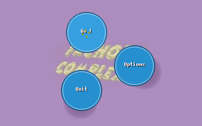
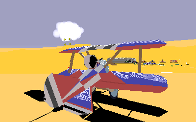
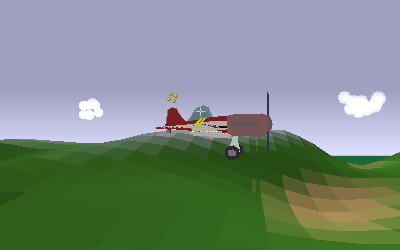
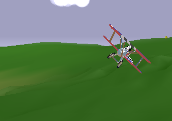
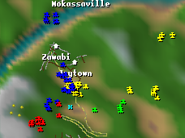
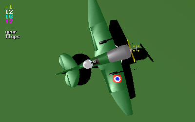

Fachoda-Complex
Some restore antique furnitures or old cars for a hobby. I am restoring a vintage piece of code, a small game that was quickly put together at the end of the former century then had its bits abandoned to rust. The original author is long gone and his ideas and thoughts forgotten. He was the me of 12 years ago.
I've always wanted to come up with a follow up but even if it was started on several occasions nothing was ever achieved. Being not interested in games nor 3D rendering any more, the only second version of it I can seriously envision now is to bring back to life this rusty piece of software.
In addition to bringing peace to my conscience I will also probably gain a few good laughs rediscovering the old bugs and non portable monstrosities I committed back then.
Day 1

I set up this page to share the fun of this restoration process.
The first step of this process consisted of the replacement or mere removal of all assembly code (the commit). This code was used mainly for the rendering so I did not expect anything to show properly after this move.
After hundreds of dreadful warnings the SDL version of the game compiled (the other versions were jettisoned one commit earlier). When you think about it, it means that SDL is still retrocompatible with code written more than 10 years ago. That's what I call commitment !
So, since I was able to run the game then I just did, and... the game menu appeared, in all its past glory, colors and animations!
So, despite all the rendering code that I just removed, there was enough rendering functions still functional to give life to the menu. There must have been a lot of redundant code in there.
If you are like me, you pay a lot of attention to the game menu. Lots of them are bugged or otherwise unpleasant because I suppose game authors enjoy writing the game engine more than its menu. But I think a good game menu says it all about authors' (lack of) care to details. The only other game I ever worked on also have an animated menu (see here). Some games I remember the menus but not the actual games. I could watch some of them for hours.
But here I was curious about the game, so I hit the "Go!" button. The game started to load but crashed before displaying it's first ingame picture.
Well, it had to be expected.
The fix was hopefully trivial. Embarrassingly trivial actually. A quite look around this line revealed many other potential variants for the same bug. Ouch. For now, let's fix this one which is causing a segfault and try again.
Compile... run... "Go!"... and then, the game!
As expected, the rendering is quite acid and not as originally intended. From the background color of this page you probably already guessed that my best friend in design is the random generator, but in my memories (and Google seams to agree) the game colors where not that tripping. It looks like the ground colors are wrong RGB ordering, and that we are somewhat below some kind of ground (but the blue sky can be seen from time to time and is indeed blue). Also, the lighting results in many small white stripes, which is nice but no, thanks.
Anyway, the engine runs already so that's not too bad.
Obviously there's still a lot of work to do before it's finished (and put to sleep again for 12 more years), but it's a good start.
To see this old program running again is a lot like when you find by accident an old toy you owned or an old drawing you've made as a kid. It feels at the same time warm and distant, familiar but alien, desirable yet worthless.
Day 2
Returning to a piece of code you wrote many years ago is indeed a humbling experience; even more than I expected. The code is odd in so many obvious ways I can no longer understand why I was somewhat proud of it at that time to a point were I was used to put a link to it on my resumes. I suppose I was proud of the numerous tricks used in the engine, and not on the code itself. But the tricks are hard to spot while the code is blatantly awfull.
This is something that often strike me: how with age we become more and more passionate about how the code looks rather than what it does and how. I suspect the younger me was right to ignore suchh issues as naming, indentation, code partitioning, etc, and ficus on the algorithms and optimisations instead; but on the other hand this is a kind of confidence that only ignorance can brings.
Anyway, I reworked somewhat the landscape generation code, removing dead code and fixing things along the way. Most importantly, I documented how this part works. The landscape is basically a map of 128x128 bytes, giving the height at that location. To each of these tile is added a sub-heighfield of 8x8 that add higher frequency signal. The nice trick is that there are only 10 of these sub-heighfield possible, and we merely have another 128x128 bytes array to associate a tile to one of these predefined sub-heighfield.
Then, we have another array of 256 colors that gives us the color of any landscape point from its altitude. Then comes the lighting, for with we need another 10 arrays of 8x8 bytes, giving the relative lightening of this particular sub-tile relative to the underlying tile (sloppy, but the eye won't notice and this avoids many dot products). Each polygon of the landscape is then "gouraued".
The whole landscape thus fit into:
128*128 + 10*(8*8) + 128*128 + 256 + 10*(8*8) = 34Kbyte.
Regarding the data structures used in the game, I noticed that very few structs were used. C is here used very much like a high level assembly, with very few custom types. For instance, each of the afore-mentioned arrays are allocated separately. Today I would without hesitation do this:
... where struct map would have a z field, a submap field, etc... But here we have all these fields allocated separately in distinct arrays. In other words, data are regrouped by usage instead of by "object". This is less easy to read but the code may be more cache friendly this way. However, I could not resist the temptation to rewrite this with the struct.
So after a few bugfixes, here is how it looks:
As you can see acid colors are gone, but I need to get back this Gouraud shading that was lost when ditching MMX code.
Day 3
I had a hard time trying to figure out how the landscape drawing functions were working. I had only some vague memories about some of the tricks used there, like the absence of sort or the multiple levels of details. In the process I've rewritten the code from scratch, fixing a few bugs along the way (and probably introduced new ones). The resulting code is easier to understand and have gained in generality, without giving up significant optimisations. In the future, one could easily add new levels of detail, for instance.
So how are frames rendered, exactly?
First, depending on the orientation of the camera, a map traversal order is chosen. We will perform an outer loop over one dimension and an inner loop over the other dimension, but we have 8 cases (4 possible starting corners and for each two possible outer dimensions). We choose to start from the farthest corner, with inner loop along the edge that stays farther away from the camera. Thus, tiles are painted roughly in decreasing distance order.
Just after a tile is rendered, the objects belonging to the space above it are painted. So we have to sort the objects within a tile in isolation, so that the sorting algorithm is dominated by the constant factor and mostly independent on the number of total objects in the world (IIRC objects are sorted using insertion sort, which is nice here since most of the time objects and camera move only a little from one frame to the next).
To reduce even further the number of objects to sort in one go, objects are grouped by categories: grounded (shadows, houses, ground vehicles...), flying, clouds... Since there is (almost) no way that a cloud may be draw after a ground vehicle for instance (since you won't be able to drag the camera under a vehicle and watch at the sky...)
But of course objects are allowed to cross tiles boundaries, so when this happen you can see some rendering artifact (like the ground below you suddenly showing up above your plane noise for one frame). To deal with this, objects belonging to the 9 closest tiles are not drawn before everything else is.
Tiles are rendered using simple Gouraud shaded triangles. Whenever a tile is close enough, we draw its submap instead, which is the same algorithm with these variations:
- World map wrap but submaps do not (you fetch data from neighboring submap instead);
- Altitude of submap is added to interpolated altitude of underlying tile;
- Color of submap comes from color of interpolated color of underlying tile, corrected by a relative lighting.
For these reasons the original program used distinct functions for traversing world map and submap. At the cost of a few function pointers, the new version use the same grid iterator, which can interpolate any set of parameters, for traversing both the world global map or a submap. This is much easier to grasp, but would have been even better with anonymous local functions; but plain C does not allow this and I have no time to rewrite everything in another language such as OCaml.
Here is the result, once restored the gouraud shading function that was missing in the previous screenshots (as a bonus, the map is back!):
 Day 4
Phong shading was unexpectedly easy to fix ; basically the code was there but the static array of a precomputed function had the wrong format (what probably happened is that it was changed for the MMX version of the code since the byte values were repeated into quad-words).
How is Phong shading implemented? Of course not the academic way since it involves a renormalization of the surface normal for each pixel. Instead, the game make use of an old trick: first you draw a picture of a spotlight and then you project this picture into your object from the light source position (not unlike environment shading). You would then obtain a rendering that can barely be distinguished from actual Phong.
But wait: what's this picture of a spotlight? It's merely a concentric spot of descending light intensity. So, you can replace the whole picture with a function that yields the light intensity at a given distance. Then, when iterating through the scanline, you just have to interpolate the distance to the center of the spot. Of course this is not a linear interpolation but the maths is trivial and involves only additions if we left apart the function giving light intensity at a given distance (which requires an exponential) ; but this function, which validity dimain spans only 256 possible distances, can be precomputed, so that we need only 256 bytes of RAM instead of the full equivalent lightmap of 64Kbytes.
Here is the now traditional screenshot of the result. Notice the non-linear repartition of light on this low-poly fuselage:
Day 5
These "days" are getting as long as weeks by now.
The second change in importance after the replacement of x86 assembly was expected to be the sound engine. The program used to control a Gravis Ultrasound via /dev/dsp ; This card was the only sound card a Linux gamer would own in those days (surely you remember your brave GUS, don't you?). The alternative for sound processing was using esound, and according to the comments it was not first class. Nothing else was available at this time that fits these requirements:
- can mix several voices,
- can play samples at various volume,
- panning,
- and pitch!
This later one being the killer for most libraries, back then and still today. Apparently, many people are happy with samples played always at the same frequency and thus sounding always exactly the same, although by varying slightly the pitch the experience is so much better! For instance in Fachoda when your plane is hit by a bullet you can ear a 'dong' like a rock hitting an old pot. So when you are under heavy fire you can either ear a boring repetition of the same 'dong' or, by an easy randomization of the pitch, a funny sequence of 'dings' and 'dongs' like you're actually ripping off an old pot under a machine gun.
The only complying library that's also open-source and elegantly designed that I know of is OpenAL, so I settled for this. I remember having already looked at it in the past but having dismissed it because of it's poor performance, but time have passed and either better implementations are available now or maybe I just lowered my expectations.
Anyway, retrofitting OpenAL into sound.c was much easier than expected, maybe because the game already had to cope with two sound engines so had to be cleaner for that matter. This left some time to implement a WAVE loader in addition to the raw sound loader, which then made replacing old sounds with newer ones much convenient.
So I changed most of the sounds (which origin was uncertain or controversial and quality pretty low) with new, better ones, downloaded from FreeSound.org. This site is very handy for finding good sounds for whatever use. Also, it has a nice feature: if you find a sound close to what you are looking for but not quite what you are looking for, the site can offer you a list of similar sounds. I never found the right sound using this feature, but it has always been both funny and intriguing to discover how two completely unrelated sound sources actually produce sounds that are close enough for a soul-less algorithm to find them similar. Go try it!